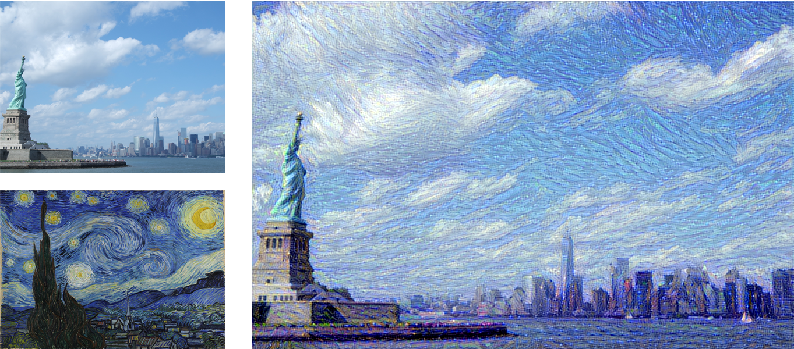
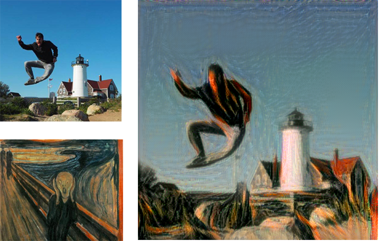

Neural Transfer Style: Artificial intelligence meets Art

Introduction
Neural Transfer Style is one of the most amazing applications of Artificial Intelligence in a creative context. In this Project, we'll see how to transfer an art painting style to a chosen image, creating stunning results. Leon A. Gatys et al. conceived the concept of Neural Transfer Style in their paper A Neural Algorithm of Artistic Style, in 2015. After that, many researchers applied and improved the methodology, adding elements to the loss, trying different optimizers and experimenting different neural networks used for the purpose.Still, the original paper remains the best source to understand this concept, and the VGG16 and VGG19 networks are the most used models in this context. This choice, which is unusual considering that both have been outperformed by most recent networks, is proved by the highest performance achieved in style transfer.
You can check the GitHub Repository
Check full code
Learning goals
- Implement a different methodology in Deep Learning
- Understand how to use intermediate results in Neural networks
How does it work?
The goal of this technique is to apply the style of an image, which we will call "style image", to a target image, conserving the content of the latter. Let's define these two terms:- Style is textures and visual patterns in an image. An example is the brush strokes of an artist.
- Content is the macrostructure of an image. People, buildings, objects are examples of the content of an image.

Let's see the high-level steps:
- Choose the image to style
- Choose the style reference image. Usually, this is a painting with a peculiar and well recognizable style.
- Initialize a pre-trained Deep neural network, and obtain the feature representations of intermediate layers. This step is done to achieve the representations of both the content image and the style image. In the content image, the best option is to obtain the feature representations of the highest layers, since they contain information on the image macrostructure. For the style reference image, feature representations are obtained from multiple layers at different scales.
- Define the loss function to minimize as the sum of the content loss, the style loss and the variation loss. Each iteration, the optimizer generated an image. The content loss is the difference (l2 normalization) between the generated image and the content image, while the style loss between the generated image and the style. We'll see later how these variables are defined mathematically.
- Re-iterate the minimization of the loss
Processing and deprocessing images
First of all, we need to format our images to be used by our network. The CNN that we are going to use is the pre-trained VGG19 convnet. As we process the image into a compatible array, we also need to de-process the resulting image, switching from a BGR to an RGB format. Let's build two auxiliary functions to do this:# Preprocessing image to make it compatible with the VGG19 model def preprocess_image(image_path): img = load_img(image_path, target_size=(resized_width, resized_height)) img = img_to_array(img) img = np.expand_dims(img, axis=0) img = vgg19.preprocess_input(img) return img # Function to convert a tensor into an image def deprocess_image(x): x = x.reshape((resized_width, resized_height, 3)) # Remove zero-center by mean pixel. Necessary when working with VGG model x[:, :, 0] += 103.939 x[:, :, 1] += 116.779 x[:, :, 2] += 123.68 # Format BGR->RGB x = x[:, :, ::-1] x = np.clip(x, 0, 255).astype('uint8') return x
Content loss
The content loss preserves the content of the main input image to style. Since higher layers of a Convolutional Neural Network contain information of the image macrostructure, we calculate the content loss as the difference (l2 normalization) between the output of the highest layer of the input image, and the same layer of the generated image.The content loss is defined as:
$$ \mathcal{L}_{content}(p, x, l) = \dfrac{1}{2} \sum_{i, j} (F^l_{ij} - P^l_{ij})^2$$ In the equation, F is the feature representation of the content image (what the network outputs when we run our input image through), and P the one of the generated image, at a specific hidden layer l.
Here's the implementation:
# The content loss maintains the features of the content image in the generated image. def content_loss(layer_features): base_image_features = layer_features[0, :, :, :] combination_features = layer_features[2, :, :, :] return K.sum(K.square(combination_features - base_image_features))
Style loss
Understanding the style loss is not as straightforward as the content loss. The goal is to preserve the style of an image (i.e. visual patterns as brush strokes) in the newly generated image. In the previous case, we compare the raw outputs of the intermediate layers. Here, we compare the difference between the Gram matrices of specific layers for the style reference image and the generated image. The Gram matrix is defined as the inner product between the vectorized feature map of a given layer. The meaning of the matrix is to capture the correlations between features of a layer. Calculating the loss for multiple layers allow preserving similar features internally correlated in different layers, between the style image and the generated image.The style loss for a single layer is calculated as:
$$ \mathcal{L}(a, x) = \sum_{l=0}^Lw_l \dfrac{1}{4 N_2^2M_l^2} \sum_{i, j} (G^l_{ij} - A^l_{ij})^2$$ In the equation, A is the Gram matrix for the style image, and G is the Gram matrix for the generated image, both respect to a given layer. N and M are the width and height of the style image.
In the equation, A is the Gram matrix for the style image, and G is the Gram matrix for the generated image, both respect to a given layer. N and M are the width and height of the style image.
The style loss is calculated first for every single layer and then applied to every layer considered to model the style. Let's implement it:
# The gram matrix of an image tensor is the inner product between the vectorized feature map in a layer. # It is used to compute the style loss, minimizing the mean squared distance between the feature correlation map of the style image # and the input image def gram_matrix(x): features = K.batch_flatten(K.permute_dimensions(x, (2, 0, 1))) gram = K.dot(features, K.transpose(features)) return gram # The style_loss_per_layer represents the loss between the style of the style reference image and the generated image. # It depends on the gram matrices of feature maps from the style reference image and from the generated image. def style_loss_per_layer(style, combination): S = gram_matrix(style) C = gram_matrix(combination) channels = 3 size = resized_width * resized_height return K.sum(K.square(S - C)) / (4. * (channels ** 2) * (size ** 2)) # The total_style_loss represents the total loss between the style of the style reference image and the generated image, # taking into account all the layers considered for the style transfer, related to the style reference image. def total_style_loss(feature_layers): loss = K.variable(0.) for layer_name in feature_layers: layer_features = outputs_dict[layer_name] style_reference_features = layer_features[1, :, :, :] combination_features = layer_features[2, :, :, :] sl = style_loss_per_layer(style_reference_features, combination_features) loss += (style_weight / len(feature_layers)) * sl return loss
Variation loss
Finally, the last component of the loss is the variation loss. This element is not included in the original paper, and it is not strictly necessary for the success of the project. Still, empirically it was proven that adding this element produces a better result since it smoothes the color variation between close pixels.Let's include this:
# The total variation loss mantains the generated image loclaly coherent, # smoothing the pixel variations among neighbour pixels. def total_variation_loss(x): a = K.square(x[:, :resized_width - 1, :resized_height - 1, :] - x[:, 1:, :resized_height - 1, :]) b = K.square(x[:, :resized_width - 1, :resized_height - 1, :] - x[:, :resized_width - 1, 1:, :]) return K.sum(K.pow(a + b, 1.25))
Total loss
Finally, the total loss is calculated taking into account all these contributions. First, we need to extract the output of the specific layers we choose. To do this, we define a dictionary as <layer name, layer output>:# Get the outputs of each key layer, through unique names. outputs_dict = dict([(layer.name, layer.output) for layer in model.layers])
def total_loss(): loss = K.variable(0.) # contribution of content_loss feature_layers_content = outputs_dict['block5_conv2'] loss += content_weight * content_loss(feature_layers_content) # contribution of style_loss feature_layers_style = ['block1_conv1', 'block2_conv1', 'block3_conv1', 'block4_conv1', 'block5_conv1'] loss += total_style_loss(feature_layers_style) * style_weight # contribution of variation_loss loss += total_variation_weight * total_variation_loss(combination_image) return loss
Setting up the Neural Network
The VGG19 network takes as input a batch of three images: the input content image, the style reference image, and a symbolic tensor which contains the generated image. The first two are constant variables and are defined as Variable using the package keras.backend. The third variable is defined as placeholder since it will change over time while the optimizer updates the results. Once the variables are initialized, we joined them in a tensor which will feed later the network.# Get tensor representations of our images base_image = K.variable(preprocess_image(base_image_path)) style_reference_image = K.variable(preprocess_image(style_reference_image_path)) # Placeholder for generated image combination_image = K.placeholder((1, resized_width, resized_height, 3)) # Combine the 3 images into a single Keras tensor input_tensor = K.concatenate([base_image, style_reference_image, combination_image], axis=0)
Once this is done, we need to define the loss, the gradients and the output. The original paper uses the algorithm L-BFGS as optimizer. One of the limitations of this algorithm is that it requires the loss and the gradients to be passed separately. Since computing them independently would be extremely inefficient, we will implement an Evaluator class that computes the loss and gradients values at once, but returns them separately. Let's do this:
loss = total_loss() # Get the gradients of the generated image grads = K.gradients(loss, combination_image) outputs = [loss] outputs += grads f_outputs = K.function([combination_image], outputs) # Evaluate the loss and the gradients respect to the generated image. It is called in the Evaluator, necessary to # compute the gradients and the loss as two different functions (limitation of the L-BFGS algorithm) without # excessive losses in performance def eval_loss_and_grads(x): x = x.reshape((1, resized_width, resized_height, 3)) outs = f_outputs([x]) loss_value = outs[0] if len(outs[1:]) == 1: grad_values = outs[1].flatten().astype('float64') else: grad_values = np.array(outs[1:]).flatten().astype('float64') return loss_value, grad_values # Evaluator returns the loss and the gradient in two separate functions, but the calculation of the two variables # are dependent. This reduces the computation time, since otherwise it would be calculated separately. class Evaluator(object): def __init__(self): self.loss_value = None self.grads_values = None def loss(self, x): assert self.loss_value is None loss_value, grad_values = eval_loss_and_grads(x) self.loss_value = loss_value self.grad_values = grad_values return self.loss_value def grads(self, x): assert self.loss_value is not None grad_values = np.copy(self.grad_values) self.loss_value = None self.grad_values = None return grad_values evaluator = Evaluator()
Last step
Finally, everything is set! The last step is to iterate the optimizer multiple times until we reach the desired loss or the desired result. We'll save the result along the iterations, to check that the algorithm is working as expected. If the result is not satisfying, we can play with the weights in order to improve the generated image.# The oprimizer is fmin_l_bfgs for i in range(iterations): print('Iteration: ', i) x, min_val, info = fmin_l_bfgs_b(evaluator.loss, x.flatten(), fprime=evaluator.grads, maxfun=15) print('Current loss value:', min_val) # Save current generated image img = deprocess_image(x.copy()) fname = 'img/new' + np.str(i) + '.png' save(fname, img)
To see the whole code, please refer to the GitHub link provided at the beginning of the page.
Awesome results

